Géographie et éducation à la citoyenneté
05 / 11 territoires
Le territoire forestier
Territoire région · Régional · L'exploitation durable de la forêt
- aménagement
- commercialisation
- déforestation
- exploitation forestière
- mondialisation
- multinationale
- récréotourisme
- ressource
- sylviculture
- L'Amazonie

Mise en contexte
Un territoire forestier s'organise à partir de l'exploitation et de la commercialisation d'une ressource naturelle : la forêt. Cette organisation doit mettre en place une gestion responsable de la ressource, pour que la forêt se développe à long terme et que l'exploitation forestière compose avec l'environnement. Elle doit aussi tenir compte des autres activités qui se pratiquent en forêt, comme la villégiature ou le récréotourisme. Sur cette page, il sera question de la forêt amazonienne, la plus grande forêt tropicale du monde, connue pour sa biodiversité et traversée par des milliers de cours d'eau, dont l'Amazone.
Concepts à l'étude
- Aménagement : l'ensemble des interventions par lesquelles on organise un territoire. En forêt, ce sont les chemins, les camps, les scieries, les sentiers et les aires protégées.
- Commercialisation : le fait de transformer quelque chose en produit que l'on vend. Un arbre devient du bois d'oeuvre, de la pâte à papier ou du mobilier, avec un prix et un marché.
- Déforestation : le recul de la forêt. Elle vient du déboisement et du défrichement, liés à l'extension des terres agricoles, à l'exploitation des ressources forestières et minières ainsi qu'à l'urbanisation.
- Exploitation forestière : l'ensemble des activités qui consistent à récolter le bois d'une forêt, de la coupe au transport vers l'usine.
- Mondialisation : le phénomène par lequel les sociétés du monde deviennent de plus en plus liées les unes aux autres, ce qui accélère la circulation des idées, des biens et des personnes.
- Multinationale : une entreprise qui exerce ses activités dans plusieurs pays. Dans le secteur forestier, ce sont les grandes papetières, les compagnies agroalimentaires et les sociétés minières.
- Récréotourisme : une forme de tourisme qui met en valeur les activités récréatives, comme les loisirs de plein air.
- Ressource : ce qu'un territoire possède et que l'on peut mettre en valeur. La forêt en est une, mais elle a ceci de particulier qu'elle se renouvelle si on lui en laisse le temps.
- Sylviculture : un mode de gestion de la forêt qui vise un développement durable à long terme, grâce auquel la forêt reste en santé. Il s'agit surtout d'entretenir les forêts et de pratiquer une coupe plus sélective.
Qu'est-ce qu'un territoire forestier
Un territoire forestier est une région organisée autour de l'exploitation de la forêt. Cette exploitation prend deux orientations distinctes : l'exploitation par l'industrie forestière, qui récolte le bois et l'exploitation récréative, qui met la forêt en valeur pour la chasse, la pêche, la randonnée, l'observation de la faune ou le canotage. Tous les territoires forestiers présentent le même défi : gérer la ressource de façon responsable, c'est-à-dire permettre à la forêt de se développer à long terme pour que les générations suivantes puissent en profiter à leur tour. Il faut donc arbitrer entre des usages qui ne demandent pas la même chose au même morceau de forêt.
Source : Alloprof
Les forêts du monde
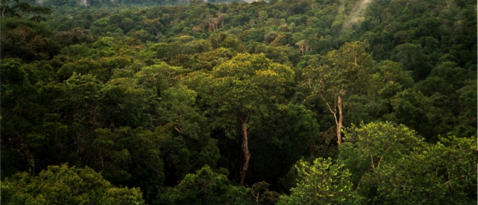
Source
Phil P Harris., Amazon Manaus forest, Wikimedia Commons. Licence : CC BY-SA 2.5.Il existe plusieurs types de forêts. Chacun dépend des espèces d'arbres qui s'y trouvent, mais aussi du climat qui y règne. Plus le climat est chaud et humide, plus les arbres gagnent en taille et plus la forêt gagne en densité. Selon l'Organisation des Nations unies pour l'alimentation et l'agriculture, les forêts couvrent 31 % de la superficie des terres émergées, soit environ 10 % de la surface du globe. De plus, 93 % de la superficie forestière mondiale est constituée de forêts naturelles, par opposition aux plantations.
Source : Organisation des Nations unies pour l'alimentation et l'agriculture
Les forêts, continent par continent
Choisis un continent
Les trois rôles de la forêt
Le rôle économique vient de ce que la forêt est une ressource exploitable. Chaque étape de l'exploitation crée des emplois, de la coupe au transport jusqu'à la transformation. On tire du bois le chauffage, la menuiserie, la construction et le papier. La forêt fournit aussi des champignons, des petits fruits, des épices et des plantes destinées à la médecine, en plus de la chasse et de la pêche.
Le rôle écologique tient au carbone et à l'eau. La forêt est, derrière les océans, le deuxième grand puits de carbone de la planète : elle en absorbe et le garde longtemps, y compris dans les produits du bois. Elle filtre aussi les poussières et les pollutions, et elle prévient l'érosion des sols en régulant le cycle des eaux de pluie, dont son couvert capte une partie.
Le rôle social rassemble les activités récréatives, le tourisme, l'enseignement et la conservation de sites qui présentent un intérêt culturel ou spirituel. Près du tiers des pays et territoires ont réservé des superficies forestières à cette fonction. Au niveau mondial, on estime que 3,7 % de la superficie forestière a pour fonction principale de remplir un rôle social.
Source : GreenFacts pour les données sur la fonction sociale
La forêt amazonienne
Avec une superficie d'environ 5,5 millions de kilomètres carrés, l'Amazonie est la plus vaste forêt tropicale de la planète. Le bassin amazonien, plus large encore avec ses 7,4 millions de kilomètres carrés, occupe près de 40 % de la superficie de l'Amérique du Sud et se répartit sur neuf pays : le Brésil, la Bolivie, le Pérou, l'Équateur, la Colombie, le Venezuela, le Guyana, le Surinam et la Guyane française. Environ 60 % de la forêt se trouve au Brésil, 13 % au Pérou et 10 % en Colombie. La forêt s'étend de la cordillère des Andes, à l'ouest, jusqu'à l'océan Atlantique, à l'est.
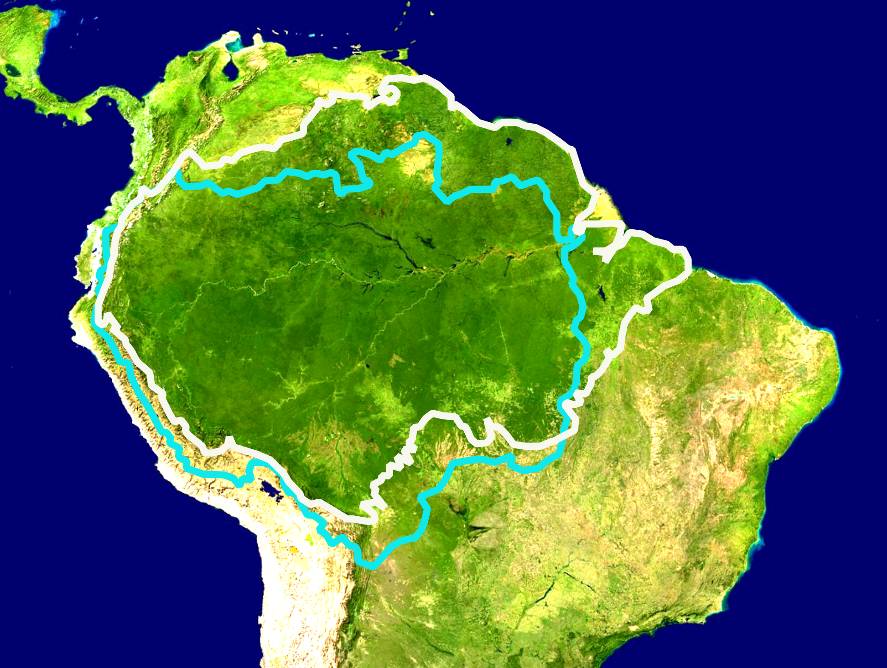
Source
Aymatth2, Amazon biome outline map, Wikimedia Commons. Licence : Creative Commons BY-SA 4.0.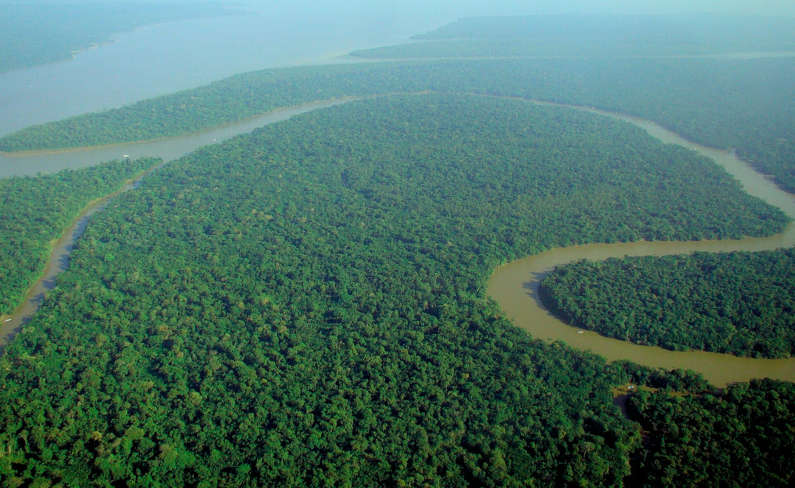
Source
lubasi, Aerial view of the Amazon Rainforest, Wikimedia Commons. Licence : Creative Commons BY-SA 2.0.Le fleuve Amazone
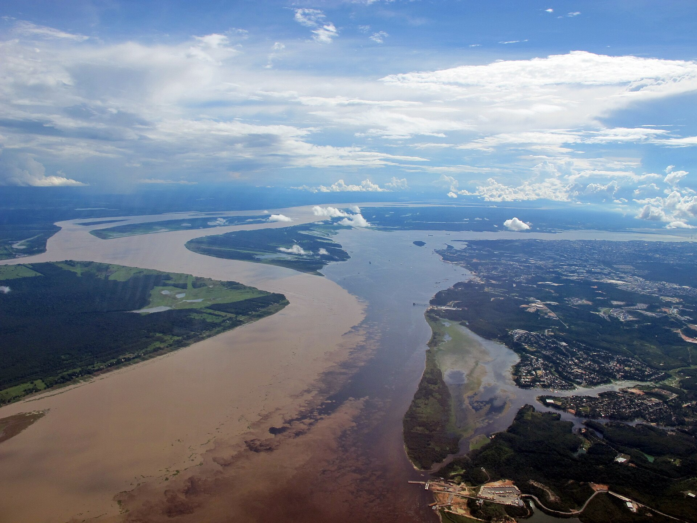
Source
Immelman284, Meeting of waters from the air manaus brazil, Wikimedia Commons. Licence : Creative Commons BY-SA 3.0.L'Amazone prend sa source au Pérou, dans la cordillère des Andes, et se jette dans l'Atlantique au nord du Brésil, à hauteur de l'équateur. Sur son parcours de plus de 6 000 kilomètres, il traverse le Pérou, la Colombie et le Brésil. Il se dispute le titre de plus long fleuve du monde avec le Nil. L'Amazone multiplie les records. Avec un débit moyen de 209 000 mètres cubes par seconde, c'est le fleuve au débit le plus élevé de la planète. Il collecte les eaux de plus de 1 000 affluents et représente à lui seul environ 20 % de l'eau douce que les fleuves déversent dans les océans. Son bassin est le plus vaste du monde.
Le climat et le type de forêt
La forêt amazonienne est une forêt tropicale humide, sous un climat équatorial. Au plus près de l'équateur, ce climat ne connaît qu'une seule saison, de fortes précipitations et une température élevée à peu près constante toute l'année. Il y pleut près de neuf mois par année et la température moyenne avoisine les 27 degrés Celsius. On estime que l'ensemble des forêts tropicales de la planète abritent au moins 92 % des espèces vivantes, animales et végétales. Plus des deux tiers de ces forêts se trouvent dans quatre pays : le Brésil, la Bolivie, la République démocratique du Congo et l'Indonésie.
Les mangroves amazoniennes
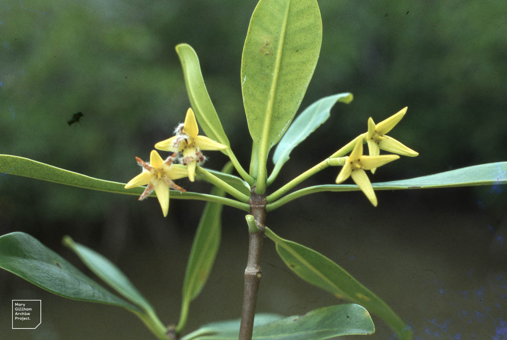
Source
Dr Mary Gillham Archive Project, Red mangrove, Rhizophora mangle flowers, Wikimedia Commons. Licence : Creative Commons BY 2.0.La mangrove est un écosystème de marais qui se forme à l'embouchure de certains fleuves, comme celle de l'Amazone. Ses arbres les plus caractéristiques sont les palétuviers, dont les racines aériennes retiennent le sol. La mangrove rend plusieurs services. Elle nourrit les populations côtières, elle stocke du carbone et elle réduit les risques de catastrophes liées aux changements climatiques. Ses racines luttent contre l'érosion des berges. Ces milieux comptent parmi les écosystèmes les plus productifs de la planète.
Une biodiversité exceptionnelle
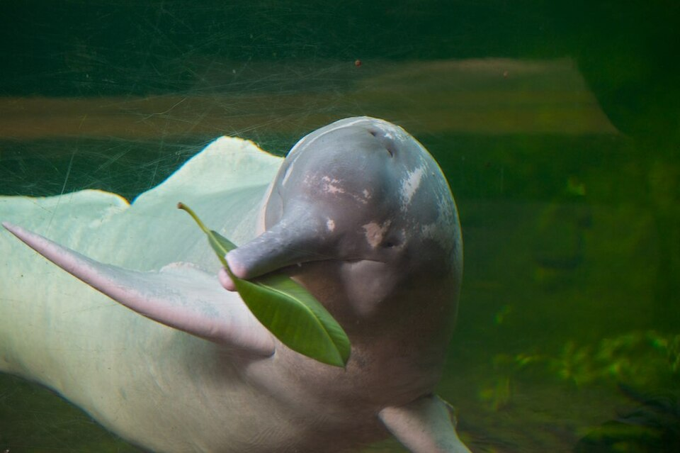
Source
Michelle Bender, Amazon river dolphin, Wikimedia Commons. Licence : Creative Commons BY-SA 2.0.L'Amazonie héberge une biodiversité phénoménale.
- Environ 40 000 espèces de plantes
- Environ 3 000 espèces de poissons d'eau douce
- Plus de 370 espèces de reptiles
- Des centaines de milliers d'espèces encore inconnues ou non répertoriées
C'est l'un des derniers refuges du jaguar, de l'aigle harpie, de la loutre géante, du caïman noir et des dauphins roses, parmi bien d'autres espèces menacées d'extinction.
Les habitants de l'Amazonie
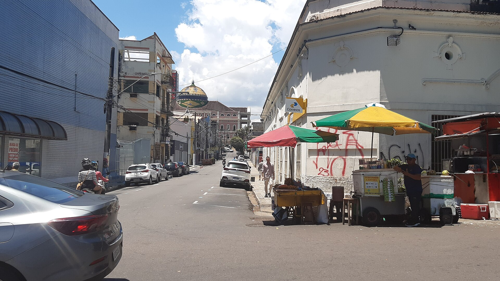
Source
Ridiculopathy, Architecture in Manaus, Brazil. March 2024 01, Wikimedia Commons. Licence : Creative Commons Zero.L'Amazonie est habitée depuis au moins 11 000 ans et compte aujourd'hui environ 34 millions d'habitants, dont les deux tiers vivent en ville. Les principales villes sont Belém et Manaus.
Manaus est la capitale de l'État brésilien de l'Amazonas, le plus grand du pays avec ses 1,5 million de kilomètres carrés. Fondée par les Portugais en 1669 sur les rives du Rio Negro, près de son confluent avec l'Amazone, elle connaît un essor rapide à la fin du 19e siècle grâce au commerce du caoutchouc, puis un long déclin jusqu'à la création d'une zone franche en 1967. Elle vit aujourd'hui de son secteur industriel, qui importe des pièces détachées et exporte des produits finis, surtout du matériel électronique. C'est le troisième pôle industriel du Brésil, après São Paulo et Rio de Janeiro.
Les peuples autochtones
Près de trois millions d'Autochtones forment quelque 420 peuples en Amazonie. Une soixantaine d'entre eux vivent dans un isolement complet. On y parle 86 langues et de nombreux dialectes. Le peuple le plus nombreux est celui des Tikuna, fort d'environ 40 000 membres, qui vit au Brésil, au Pérou et en Colombie. Plus du tiers de la forêt amazonienne est reconnu officiellement comme territoire autochtone. Ce n'est pas un détail juridique : les taux de déforestation y sont nettement plus bas qu'ailleurs, ce qui fait des peuples autochtones des acteurs centraux de la protection de la forêt et non de simples habitants.
Raoni Metuktire, chef du peuple kayapo né en 1932, est la grande figure de la lutte contre la déforestation. Il voyage à travers le monde depuis 1989 pour la préservation de la forêt et des peuples autochtones.
Les Uru-Eu-Wau-Wau, gardiens d'un territoire
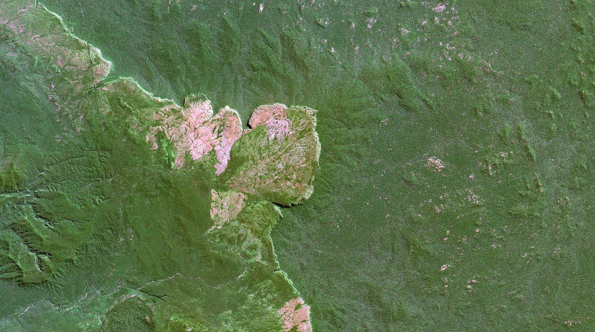
Source
Coordenação-Geral de Observação da Terra/INPE, Indigenous Land Uru-eu-wau-wau area, Rondônia, Wikimedia Commons. Licence : Creative Commons BY-SA 2.0.Reconnaître un territoire autochtone sur une carte ne suffit pas à le protéger. La terre indigène Uru-Eu-Wau-Wau, dans l'État de Rondônia, le montre mieux que n'importe quel chiffre. Homologuée en 1991, elle couvre environ 19 000 kilomètres carrés, près des deux tiers de la superficie de la Gaspésie. Trois peuples y vivent en contact avec le reste du pays, les Uru-Eu-Wau-Wau, les Amondawa et les Oro Win, et la FUNAI y a confirmé la présence d'au moins trois groupes en isolement volontaire, c'est-à-dire qui n'ont jamais établi de contact.
Un peuple qui a failli disparaître
Le premier contact avec les Uru-Eu-Wau-Wau remonte à 1981. Dans les années qui ont suivi, leur population est passée d'environ 250 personnes à 80, décimée par les maladies et par les affrontements avec les colons venus s'installer pendant la dictature militaire, qui a gouverné le Brésil de 1964 à 1985. L'Institut socio-environnemental en dénombre aujourd'hui environ 85, et le territoire entier compte à peine 183 habitants. Ce sont donc 183 personnes qui veillent sur un territoire grand comme les deux tiers de la Gaspésie, entouré de fermes et de pâturages.
Des envahisseurs et des drones
La menace principale s'appelle l'accaparement de terres. Des personnes venues d'ailleurs pénètrent illégalement dans le territoire, ouvrent des pistes, abattent des arbres et occupent le terrain en espérant que la loi finisse par reconnaître leur présence. En 2019, l'organisation Kanindé estimait à plus de mille le nombre d'occupants illégaux sur ce seul territoire, et les habitants rapportent des intimidations régulières.
La riposte est venue de la jeune génération, et elle passe par la technologie. Formés à l'usage des drones, des caméras et du GPS, de jeunes Uru-Eu-Wau-Wau patrouillent leur territoire et filment les invasions. Les images deviennent des preuves, qu'ils transmettent aux autorités et aux organisations qui les appuient. Bitaté Uru-Eu-Wau-Wau, un des leaders du village de Jamari, est l'une des figures de cette surveillance.
Exploiter la forêt amazonienne
Les ressources de l'Amazonie sont convoitées. Plusieurs essences de bois y sont exploitées, surtout pour la construction. Certaines plantes servent à mettre au point des médicaments. L'élevage bovin réclame d'immenses pâturages, et le sous-sol recèle de l'or, du fer, du cuivre et de la bauxite. La culture du soja s'est ajoutée à la liste.
Le caoutchouc au 19e siècle
Les premières exploitations remontent à la seconde moitié du 19e siècle. Aux limites de la forêt, c'est le domaine de l'hévéa : de la sève de cet arbre on extrait le latex, transformé ensuite en caoutchouc. Le marché du caoutchouc connaît un boom énorme, et c'est lui qui enrichit Manaus au point d'y faire bâtir un opéra en pleine forêt.
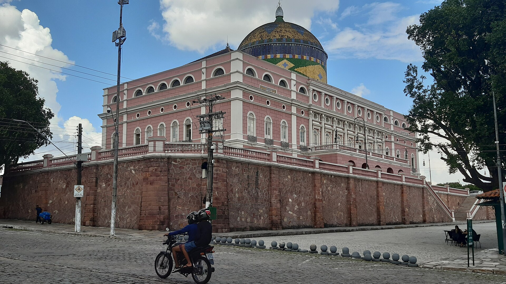
Source
Ridiculopathy, Amazon Theatre, Teatro Amazonas. Manaus, Brazil. 01, Wikimedia Commons. Licence : Creative Commons Zero.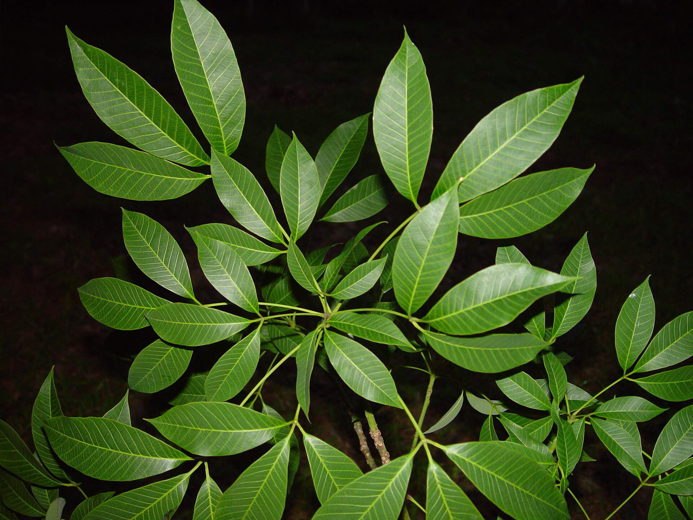
Source
Auteur inconnu, Rubber tree leaves, Wikimedia Commons. Licence : Domaine public.La route transamazonienne
Dans les années 1970, les généraux au pouvoir lancent un immense projet routier pour relier le Pérou au Brésil. La transamazonienne devait traverser le continent d'est en ouest sur 5 600 kilomètres. Son but était d'atténuer l'isolement de la région et de stimuler son développement économique et démographique. Les responsables avaient prévu offrir des terres aux Autochtones. Ils ont plutôt aménagé des bandes agricoles de dix kilomètres de large de chaque côté de la route. Une route en forêt tropicale n'est jamais qu'une route : elle ouvre un accès, et le déboisement suit de part et d'autre.
Deux façons de couper
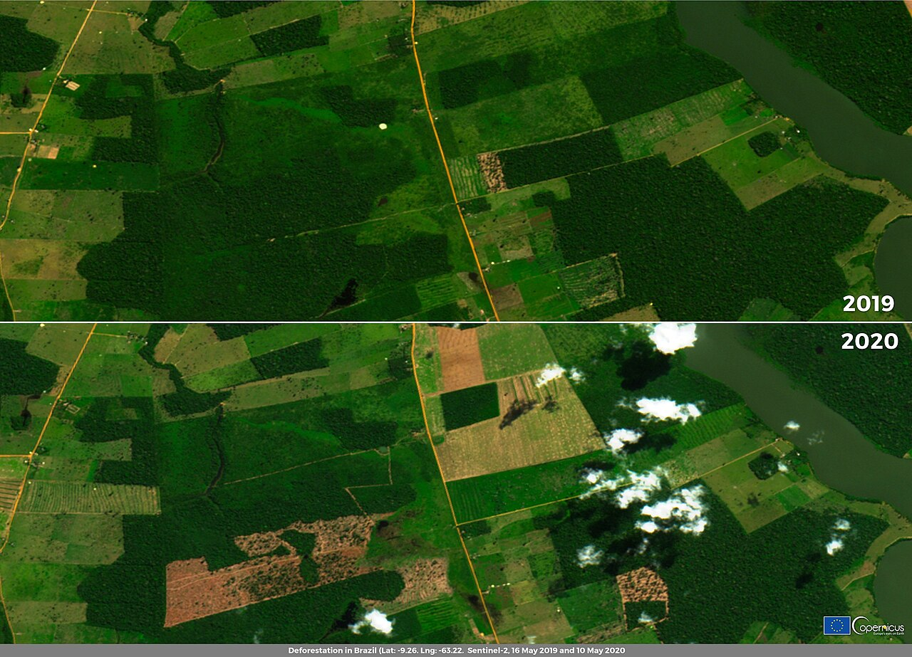
Source
European Union , Copernicus Sentinel-2 imagery, Deforestation in Brazil (deforestation-brazil), Wikimedia Commons. Licence : Attribution.La coupe sélective consiste à n'abattre qu'une espèce ou qu'un type d'arbres choisis, généralement ceux dont la valeur marchande est la plus élevée. La forêt reste debout, mais l'opération fragilise les arbres voisins et le sol, et elle ouvre des chemins qui donnent accès à des secteurs jusque-là intacts.
La coupe à blanc consiste à abattre la totalité des arbres d'une parcelle. Elle est employée lorsqu'on veut changer l'essence en place ou défricher pour un autre usage. En Amazonie, elle sert surtout à ouvrir des pâturages et des champs. C'est elle que mesurent les statistiques officielles de déforestation.
La déforestation, une courbe qui s'inverse
Depuis 1970, plus de 700 000 kilomètres carrés de forêt amazonienne ont été détruits. Selon les données officielles, environ 729 000 kilomètres carrés du biome amazonien ont été déboisés à ce jour, soit à peu près 17 % du total, dont 300 000 au cours des vingt dernières années.
La courbe s'est pourtant inversée. Entre août 2024 et juillet 2025, 5 796 kilomètres carrés ont été déboisés dans l'Amazonie brésilienne, une baisse de 11 % sur un an et le plus bas total depuis onze ans. C'est la quatrième baisse consécutive. Le pic récent remonte à 2020-2021, avec 13 038 kilomètres carrés. La déforestation a donc été réduite de plus de moitié en quatre ans.
Source : Institut national de recherches spatiales du Brésil, programme PRODES, données publiées en octobre 2025
La destruction de la végétation est historiquement la première source d'émissions de gaz à effet de serre du Brésil, devant l'agriculture intensive et la production d'énergie. C'est ce qui rend la courbe précédente intéressante bien au-delà du Brésil. Ces activités laissent des conséquences que la seule superficie ne dit pas : la perte de biodiversité, le déplacement de populations autochtones, l'épuisement des sols, la pollution de l'eau et de l'air ainsi que des inondations plus fréquentes.
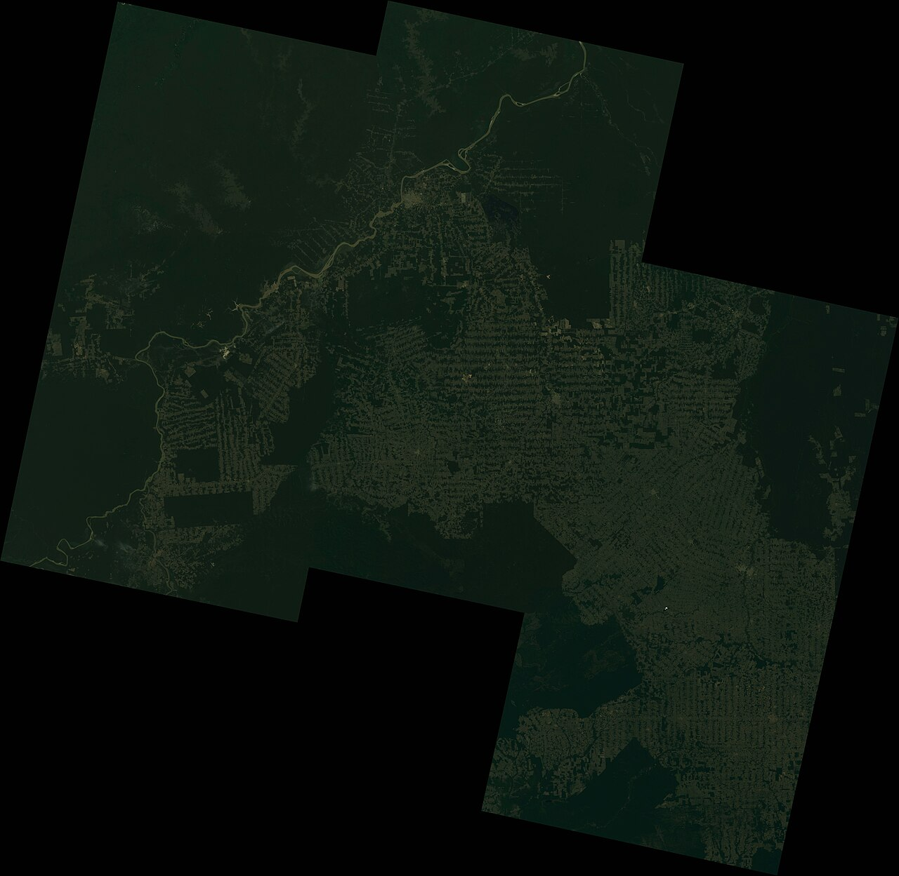
Source
O.V.E.R.V.I.E.W., Rondônia Deforestation Composite (July 2016), Brazil (35120418435), Wikimedia Commons. Licence : Creative Commons BY 2.0.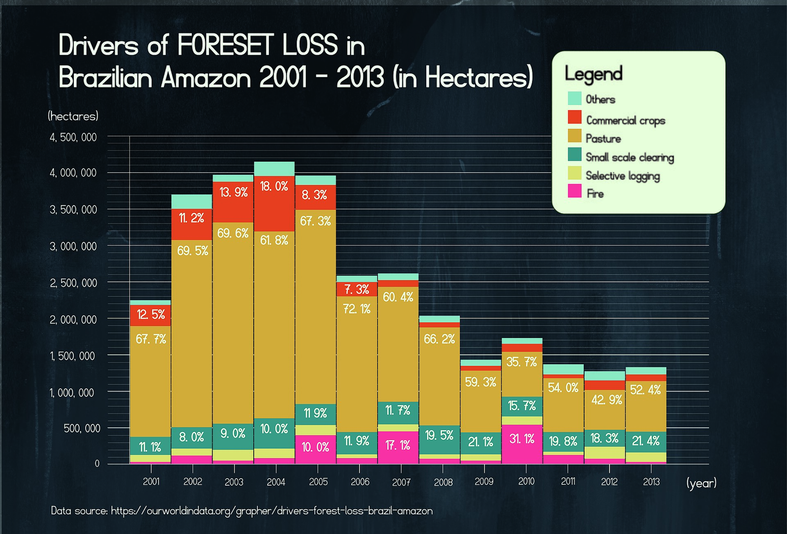
Source
Qin Wang, Drivers of forest loss in Brazilian amazon 2001-2013, Wikimedia Commons. Licence : Creative Commons BY-SA 4.0.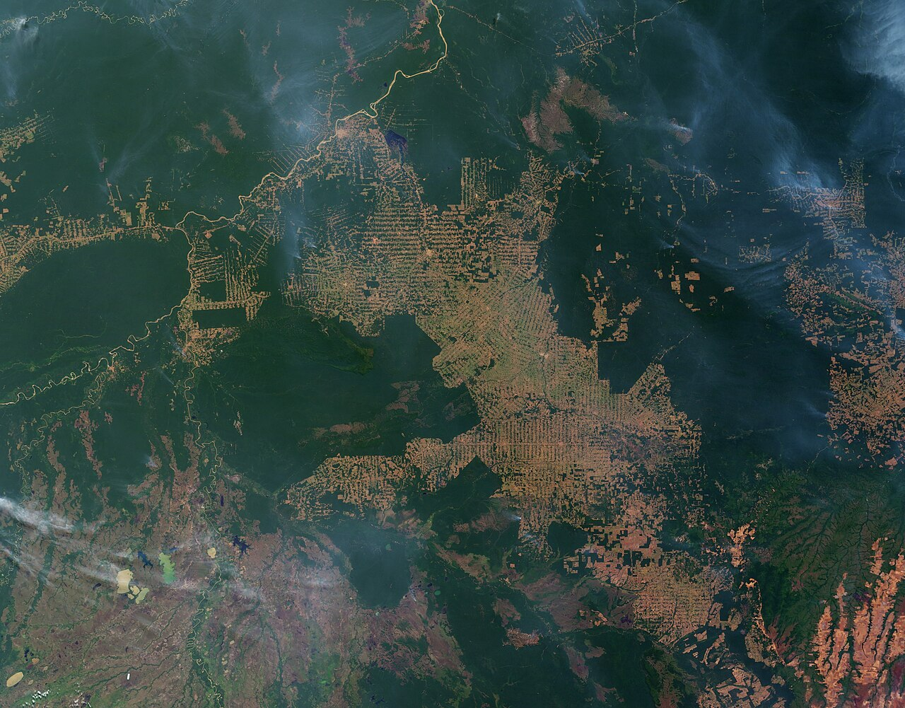
Source
Jesse Allen and Robert Simmon, Fires and Deforestation on the Amazon Frontier, Rondonia, Brazil - August 12, 2007, Wikimedia Commons. Licence : Domaine public.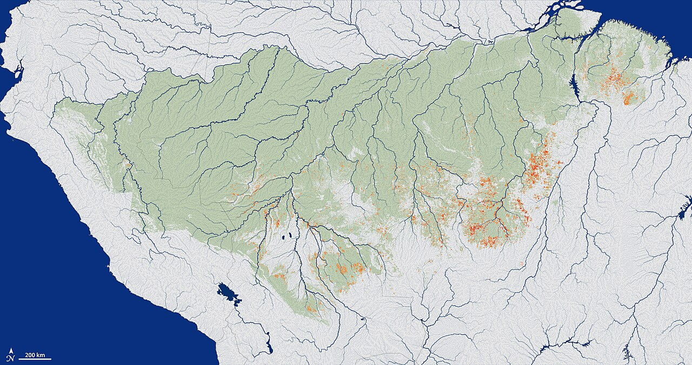
Source
NASA's Earth Observatory, Climate Conditions Determine Amazon Fire Risk, Wikimedia Commons. Licence : Domaine public.Ce qui explique le retournement
Une courbe qui plie de moitié en quatre ans ne tient pas au hasard ni au climat. Elle suit de près les décisions du gouvernement fédéral brésilien. De 2019 à 2022, sous la présidence de Jair Bolsonaro, les budgets des agences environnementales sont coupés, les contrôles s'allègent et les invasions de terres autochtones atteignent des sommets. C'est la période du pic, avec 13 038 kilomètres carrés déboisés en 2020-2021.
Depuis janvier 2023, sous le troisième mandat de Luiz Inácio Lula da Silva, les agences sont refinancées et les amendes de l'IBAMA, l'organisme brésilien de contrôle environnemental, remontent fortement. Le Fonds Amazonie, qui reçoit des contributions étrangères pour financer la protection de la forêt, est relancé. Un ministère des Peuples autochtones est créé et confié à Sônia Guajajara, et la direction de la FUNAI revient pour la première fois à une personne autochtone. Seize territoires autochtones sont homologués. En novembre 2025, le Brésil accueille la COP30, la conférence de l'ONU sur le climat, à Belém, aux portes de l'Amazonie.
L'effet ne se limite pas à la forêt : selon l'Observatoire du climat, un réseau d'organisations brésiliennes, le pays a réduit ses émissions de gaz à effet de serre de 16,7 % en une année, grâce au recul de la déforestation.
Protéger l'Amazonie
La protection de l'Amazonie et son exploitation responsable sont réclamées par plusieurs acteurs : les écologistes, les peuples autochtones, les entrepreneurs forestiers et les agriculteurs. Ils ne s'entendent pas sur les moyens, mais trois voies se sont ouvertes.
Le projet agroécologique de la transamazonienne
Lancé en 1996, ce projet réunit des chercheurs et des environnementalistes autour d'un même but : promouvoir des pratiques agricoles durables et une meilleure gestion des ressources forestières pour les quelque 40 000 familles qui vivent le long de la route. Il visait aussi à réduire la déforestation causée par la route elle-même et par l'élevage extensif de bovins.
Source : Alloprof
Les réserves écologiques
La forêt reste le principal moteur économique de l'Amazonie. Le Brésil a créé des réserves écologiques pour protéger certains secteurs, surtout afin d'étudier ce milieu encore mal connu. Les limites d'exploitation et les habitudes de coupe n'ont pas été modifiées pour autant à l'extérieur de ces réserves. Certaines compagnies forestières ont tout de même obtenu la certification FSC, qui atteste d'une gestion responsable.
L'écotourisme
La forêt dense de l'Amazonie se découvre difficilement seul. La végétation touffue se régénère vite et empêche l'aménagement de sentiers, sans compter la chaleur équatoriale et l'humidité. Des entreprises pratiquent malgré tout un tourisme durable : visites sur le fleuve, safaris d'observation de la faune, excursions dans les réserves écologiques. Dans tous les cas, les visiteurs ont besoin de guides. Le bateau est le principal moyen de transport, parce qu'il permet d'observer la faune et la flore sans perturber le milieu. Là où des aménagements sont nécessaires, on privilégie les passerelles suspendues, qui laissent observer les oiseaux et la canopée sans modifier le paysage au sol.
Source : Alloprof
La réserve de Mamirauá, un cas concret
Mamirauá, dans l'État d'Amazonas, est la première réserve de développement durable créée au Brésil, en 1996. Elle couvre environ 11 000 kilomètres carrés entre les rivières Solimões, Japurá et Auati-Paraná, près de la ville de Tefé. C'est une forêt de várzea, c'est-à-dire une forêt inondable : entre la saison sèche et la saison des pluies, le niveau de l'eau monte et descend de dix à douze mètres. Cette zone humide est reconnue depuis 1993 par la convention de Ramsar, un traité international qui protège les milieux humides d'importance mondiale.
Un hôtel flottant, ouvert en 1998, y accueille les visiteurs. Il est géré conjointement par l'institut de recherche de la réserve et par les communautés riveraines, et il n'héberge jamais plus d'une vingtaine de personnes à la fois. L'électricité vient du soleil, l'eau de la pluie et les eaux usées sont traitées par des micro-organismes plutôt qu'avec des produits chimiques.
Le tourisme de base communautaire
Ce qui distingue Mamirauá tient moins à ses panneaux solaires qu'à son organisation du travail. Le personnel vient des communautés riveraines, de la direction aux guides en passant par la cuisine, et onze communautés en tirent un revenu. Surtout, chacun travaille en rotation, environ dix jours par mois, puis retourne à la pêche et à l'agriculture familiale. Ce détail n'en est pas un. Il répond directement à l'enjeu qui frappe la Gaspésie et toutes les régions qui vivent du tourisme : la dépendance. En limitant le nombre de jours travaillés, les communautés gardent leurs activités traditionnelles et ne se retrouvent pas démunies si les visiteurs cessent de venir.
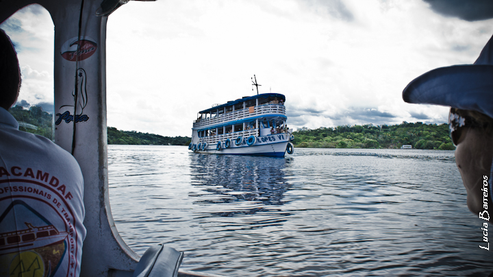
Source
lubasi, Barco chegando (6126927092), Wikimedia Commons. Licence : Creative Commons BY-SA 2.0.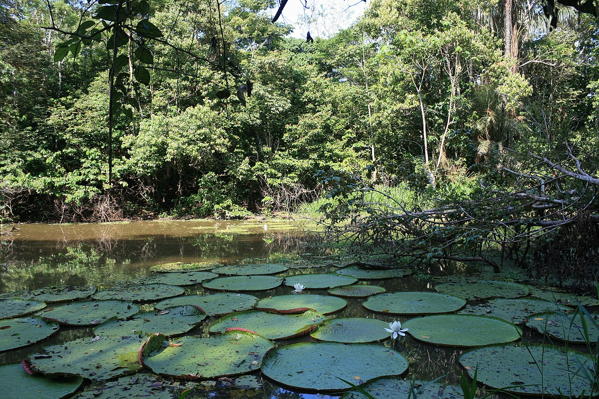